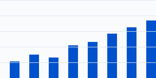
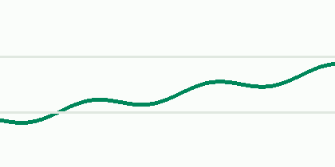

Quarterly service report
Requests increased during the quarter while median latency remained within target.


| Region | Availability |
|---|---|
| North | 99.97% |
| South | 99.94% |
Request path
Client→
Gateway→
Service
Failure recovery
Timeout→
Retry once→
Report result